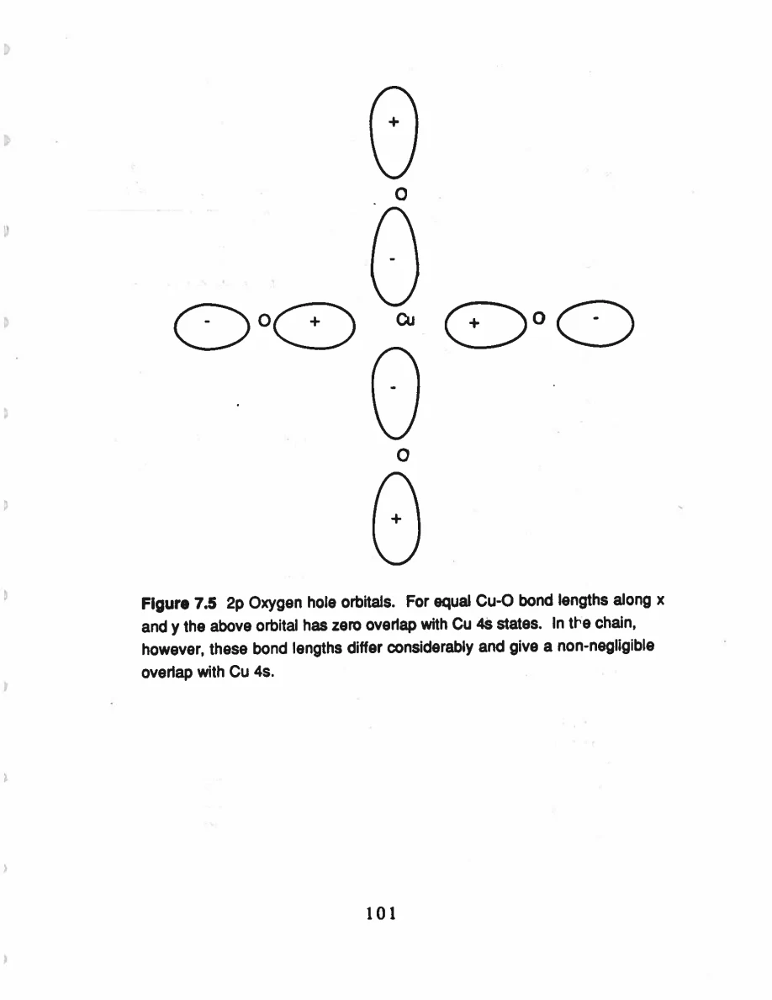
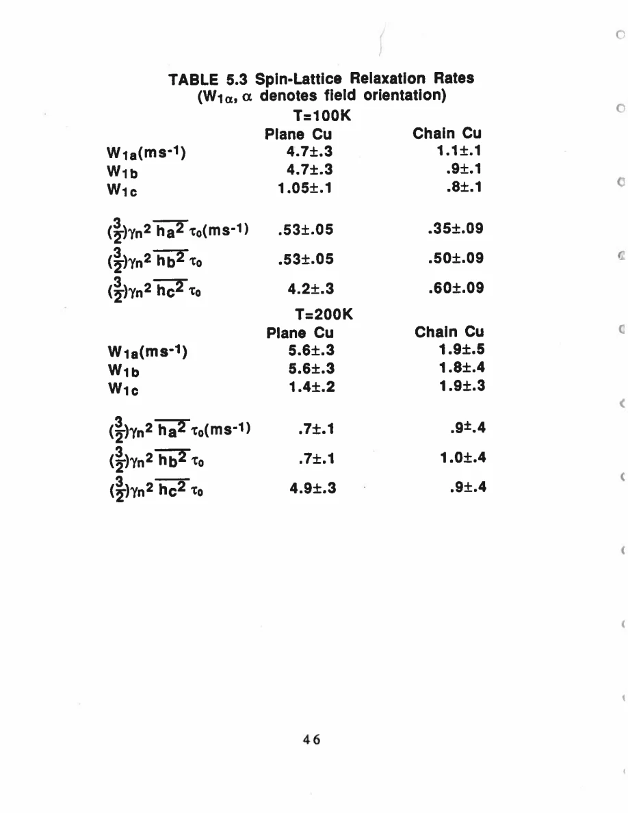

Pennington · supplied source 1989 · chapter unit
9. Chain Cu as an oxygen-hole probe
A nucleus can be dominated by one electronic coupling channel without disproving other local degrees of freedom.
The question: Why can chain recovery look metallic while the Cu orbital remains Cu²⁺-like?
Before you start: the terms you need
- Plane Cu / chain Cu: the two crystallographic copper sites in YBCO
- EFG: electric field gradient, which couples to a nuclear quadrupole moment
- Magnetic shift: the field-proportional frequency change after quadrupole contributions are separated
- W₁: the thesis’s elementary satellite population-transition rate, not automatically 1/T₁
- Redfield contribution: echo decay generated by the fluctuating fields also responsible for population recovery
- Transferred hyperfine coupling: a nuclear spin senses electronic spins through orbital mixing or intervening atoms
See → explain → check
Follow the idea in 3 pictures.
Picture 1 / 3
Compare expected and observed recovery
Look for: Ask what a Cu-local-moment-dominated chain would predict.
Swipe across the picture to read every label, or enlarge it below.
- Local-Cu-dominated expectation
- Measured chain behavior
The contrast motivates the model; it does not directly prove the absence of Cu moments.
Near-isotropic W₁ motivates a different dominant channel.
Check the original: PDF p. 95
Picture 2 / 3
Two terms in one shift
Look for: An anisotropic total can include an isotropic spin part.
Swipe across the picture to read every label, or enlarge it below.
- Orbital contribution
- Oxygen-hole contribution
- Measured total
Teaching sum; external superconducting shifts constrain the separation.
Orbital and Knight contributions need separate treatment.
Check the original: PDF p. 96
Picture 3 / 3
Keep the unresolved part visible
Look for: One observable’s explanation does not close the entire site model.
Swipe across the picture to read every label, or enlarge it below.
- Population relaxation
- Extra echo decay
Source evidence boundary.
Chain oxygen-hole recovery is supported, while extra echo decay remains uncertain.
Explain it back.
Try answering aloud before opening the explanation.
How can chain total shift be anisotropic if its recovery is isotropic?
The total includes an anisotropic orbital shift, while an approximately isotropic oxygen-hole spin channel dominates recovery.
Is a chain local moment directly established as strongly as the plane moment?
No. The source proposes it from orbital/atomic considerations and discusses why the chosen nucleus may barely sense it.
Go deeper Follow the full argument
Confront the unlike recovery tensors
If the chain Cu recovery were dominated by the same Cu-local-moment mechanism used for the planes, the source expects a similar strong anisotropy with the symmetry axis rotated from c to a. Instead chain W₁ is roughly isotropic within experimental uncertainty and close to proportional to temperature. This mismatch leads the author to seek another dominant channel. Oxygen 2p states can mix with Cu 4s and transfer an approximately isotropic contact interaction to the Cu nucleus. Such a conduction-hole channel naturally produces an isotropic Knight shift and a Korringa-type relaxation term. The key statement is which channel dominates what the nucleus sees. A Cu orbital that looks single-hole-like in its EFG need not dominate the nuclear population-relaxation rate.
Use the total shift without calling it all Knight
The chain total shift remains anisotropic even though recovery is near-isotropic. Pennington decomposes it into an isotropic oxygen-hole Knight shift and an anisotropic orbital shift for the chain y²−z² hole. Under a near-degeneracy assumption for the relevant excited orbitals, the orbital shift ratio is approximately 4:1. The normal-state tensor then predicts an isotropic Knight contribution around 0.31%. External superconducting-state shift measurements give approximately 0.33%, supporting the decomposition. Combining that spin contribution with W₁ gives the source’s Korringa comparison. Its interaction factorB is about 0.43 where the noninteracting reference is 1; the author calls this a modest correction and interprets the oxygen-hole channel as relatively weakly interacting. It is not exact equality to the free-electron relation, and the result applies to this selected relaxation channel, not to every carrier or the entire Cu–O solid.
Symmetry, rapid scattering and an unresolved echo
The thesis explains why oxygen-hole coupling can be larger at the chain site. In a symmetric surrounding orbital combination, contributions to a Cu 4s overlap can cancel. The shorter bridge-oxygen bond and longer chain-oxygen bond break that equality and allow nonzero overlap. The author still proposes that chain Cu may retain a local moment, based on EFG/shift similarity and atomic considerations. To explain why that moment barely appears in the recovery and spin shift, it must have a small susceptibility and be rapidly scattered by oxygen holes. This is a proposed physical explanation rather than a separately resolved measurement of a chain moment. The chain’s extra transverse decay also remains unresolved: its Gaussian form and isotope scaling do not occupy either simple static-like-spin or motional-narrowing limit. The source cannot decide whether indirect nuclear coupling is present there. A successful band-like recovery interpretation should not be extended to claim every chain observable is understood.
Translate the mathematics Essential equations and their meaning
(3 T/2 W₁)K_h²=[ℏ/(4πk_B)](γ_e/γ_n)²B
Symbols: B: source interaction correction, distinct from hyperfine B₁; K_h: isolated oxygen-hole Knight contribution
Source Eq 7.33 uses its W₁ convention. B≈0.43 is a moderate deviation from its noninteracting reference 1.
Read the evidence Guided original source pages

PDF p. 113

PDF p. 58
What the evidence supports—and where it stops
- The Korringa factor is not exactly 1; the claim is a relatively weakly interacting channel.
- The chain moment and its rapid-scattering explanation remain less direct inferences.
- Extra chain echo decay is unresolved.
Source version, reading coverage and preservation
All 146 scanned pages rendered and locally OCR-recognized with Windows.Media.Ocr. Research prose of PDF 13–139 read in full; source-specific formulas and selected complete page figures inspected individually. PDFpage=printedpage+12.
Reviewed body pages: 13, 14, 15, 16, 17, 18, 19, 20, 21, 22, 23, 24, 25, 26, 27, 28, 29, 30, 31, 32, 33, 34, 35, 36, 37, 38, 39, 40, 41, 42, 43, 44, 45, 46, 47, 48, 49, 50, 51, 52, 53, 54, 55, 56, 57, 58, 59, 60, 61, 62, 63, 64, 65, 66, 67, 68, 69, 70, 71, 72, 73, 74, 75, 76, 77, 78, 79, 80, 81, 82, 83, 84, 85, 86, 87, 88, 89, 90, 91, 92, 93, 94, 95, 96, 97, 98, 99, 100, 101, 102, 103, 104, 105, 106, 107, 108, 109, 110, 111, 112, 113, 114, 115, 116, 117, 118, 119, 120, 121, 122, 123, 124, 125, 126, 127, 128, 129, 130, 131, 132, 133, 134, 135, 136, 137, 138, 139. Acknowledgments and biography are not teaching material. Bibliography not independently verified against external publications. Mathematical derivations are summarized at final-result level; not every algebraic line independently reconstructed.
Source SHA-256: 85b6d3c8d20ccc23476bf72473860248d5228e16892afefa8dec6c7054d43c26. Original file bytes preserved locally, and in this room’s original download.
Thesis - Pennington - 1989 - Single crystal NMR of high temperature superconductors.pdf